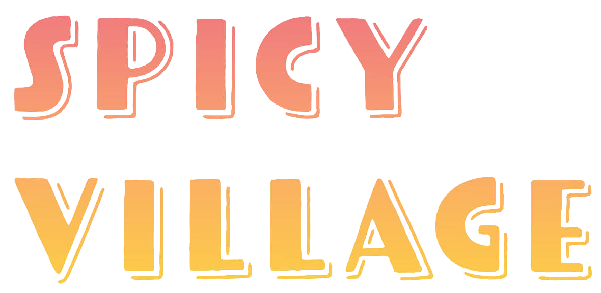
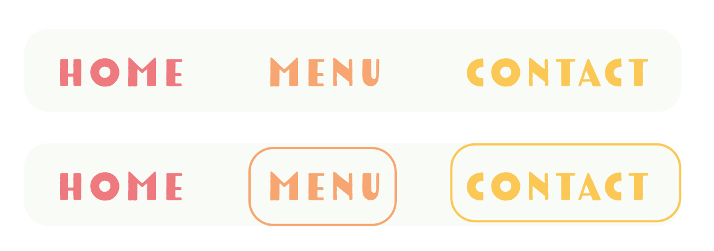
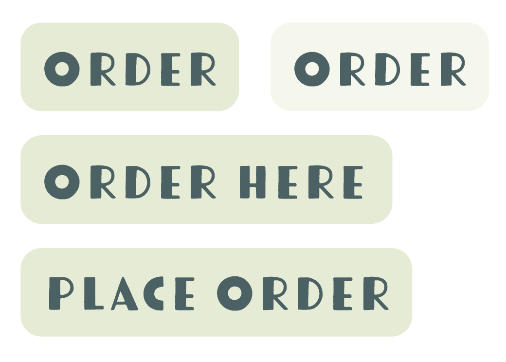
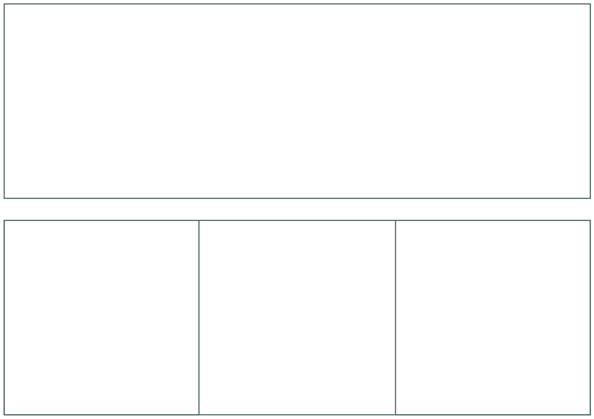
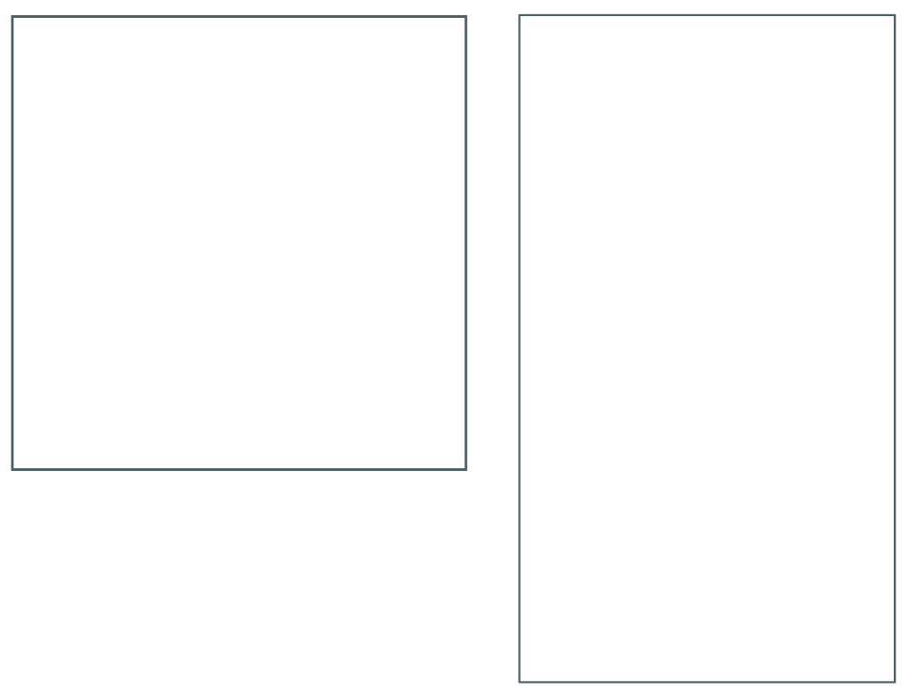
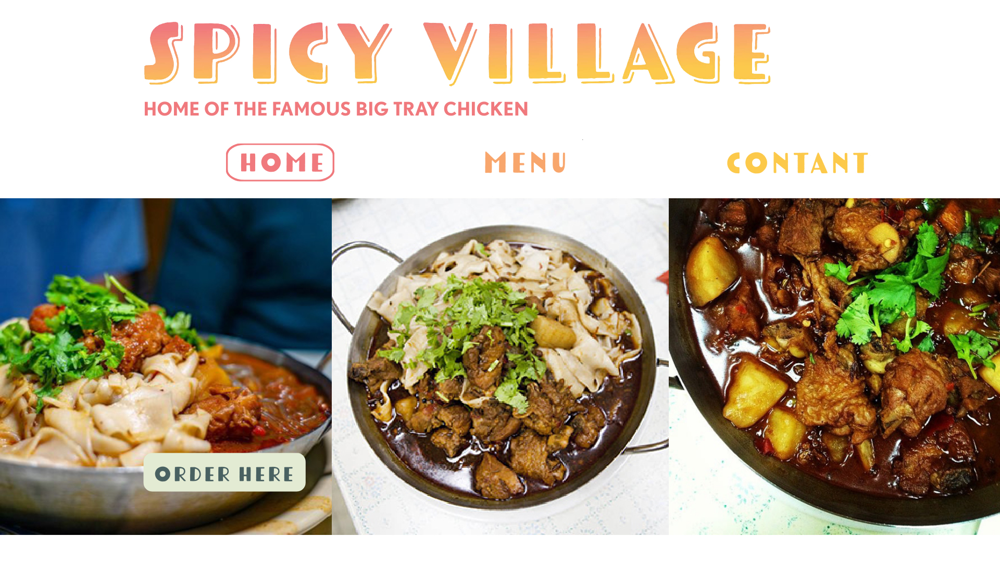
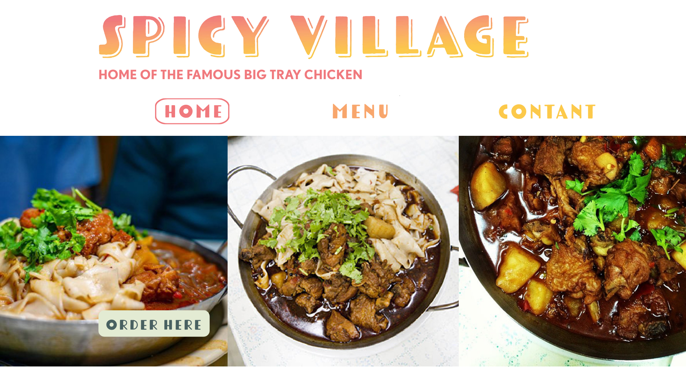

VISUAL DESIGN LANGUAGE EXAMPLES
Restaurant Name
- Tomarik Display Shadow type in size 64pts
- Uses SP-Pink (#f0797d )to SP-Orange (#f9a66c) to SP-Yellow (#fcc94a) for gradient
- Always appear flush left or on a single line (note how gradient shifts)
- If two lines, spacing should be 76pts

Navigation
- Each page has a designated color
- type size 20pts in Tomarik Display
- 40px spacing between each navigation link
- When selected a 1pt rounded square appears around the page name the customer is on

Header A
- Page’s header should match the nav color
- Type size 56pts with 60pts line spacing in Tomarik Display
Paragraph Text
- Type size 24pt with 36pt line spacing in Nobel Book
- Blocks of text should always be left aligned (not justified)
- Text color is SP-Blue
About Spicy Village
Spicy Village is located on the lower east side of Manhattan and offers delicious dining and takeout to New York, NY. Spicy Village is a cornerstone in the New York community and has be recognized for its outstanding Chinese cuisine, excellent service, and friendly staff.
Header B
- Page’s header should match the nav color
- Type size 64pts with 72pts line spacing
- Use Tomarik Display Shdaow header typeface when there is a sub-heading present
Sub-Head
- Type size 40pt with 56pt line spacing in Tomarik Display
- Color should be different than header color, if header is SP-Orange use either SP-Pink or SP-Yellow
Menu Text
- Type size 24pt with 36pt line spacing in Nobel Book typeface
- Blocks of text should always be left aligned (not justified)
- Text color is SP-Blue
- Menu items should be Nobel Bold to differentiate from description
Menu
Beverages
Ordering Buttons
- Uses SP-Green (#e5ebd3)
- When button is clicked, background color becomes SP-Green4 (#EFF3E5)
- Text color is SP-Blue (#4A6162)
- Always one line with 28pt type in Tomarik Display
- Text always centered within rounded corner square

Banner Images A
- Only used on homepage
- Size should be 2400px width by 800px height
- Margin of 20px below
- High-resolution photos at least 300ppi
Banner Images B

Social Post
- Used on Instagram, Facebook, Twitter
- Square images are preferred, 1080px by 1080px
- if wanting to use a landscape image, post it as a carousel broken into squares
- High-resolution photos at least 300ppi
Social Story
- Used on Instagram stories
- Square images are preferred, 1080px by 1920px
- Use for reposting customers experiences eating at Spicy Village
- Can be used to market new menu items or updates to holiday hours
- If text is needed use Nobel Bold typeface size 24pt
- For type use either SP-Pink, SP-Orange, or SP-Yellow

Forms
- Header color should match nav color
- Input descriptor (ie name, email, etc) type in Nobel Bold size 24pt and 36pt line height in SP-Blue
- Single-line input boxes should be slightly less than full line height of text to add space, (ie 32pts tall)
- Multi-line input box should be 3 times the size of single line box (ie 96pts)
- Rounded corners on all input boxes
- Form box color should be tints moving in rainbow order from SP-Pink4 (#F9C9CB ) to SP-Orange4 (#FDDBC4 ) to SP-Yellow4 (#FEE9B7)
- Button should match ordering buttons, SP-Green with Tomarik Display in SP-Blue

 
